I spend most of my time building agents — the kind that actually run in production, not the kind that look pretty in a demo video. Right now that means a harness-driven multi-agent system at Tencent's ad department in Shenzhen — I first interned there last summer, then came back for a second round earlier this May.
Before that I cofounded a small AI company in Hong Kong called AIJobTech, grew it to a few thousand weekly users on a multi-agent LangChain backend, and learned the hard way that retention is harder than launch. I'm finishing a stats & data-science MS at UCLA next summer.
I write code in Python and C++, think in PyTorch, and spend a lot of evenings reading papers about how agents plan, reason, and use tools.
At Tencent the project started as a plain LangGraph workflow and has turned into a harness-driven multi-agent system that lives inside the ad database. Roughly the territory it covers today:
What keeps surprising me is that the system prompt is mostly this map — a description of where the agent is allowed to wander. The harness is the map.
We're now adding a dreaming module: the agents reflect on the day's transcripts while we sleep and propose their own prompt edits. Curious whether they wake up smarter or just more confused.
Still chipping away at AIJobTech on weekends with my cofounder. The matching layer keeps getting rewritten as the agent frameworks mature.
Quietly looking for full-time agent-engineering roles starting after I graduate in June.

The fastest way is jinruilin@g.ucla.edu. I read everything, even cold ones — especially if you're working on agent infrastructure, tool-use, or anything in that neighborhood.
Also reachable on GitHub and LinkedIn. I don't tweet much.
If you wandered here from a job listing — yes, I'm graduating June 2026, and yes, I need visa sponsorship. The short version is on my GitHub; the long version is over coffee.